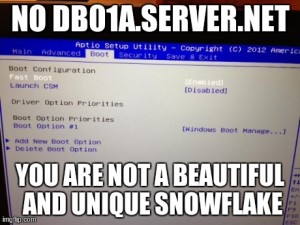

Picking Server Hostnames: Worstest, Worser, Worst... Better, Betterer, Bestest
Picking a server hostname is a big deal. I’ve seen quite a few, lets traverse the hostname-awesomeness-continuum and see if we can learn something.
Worsest
- morpheous
- trinity
- alf
Why do these suck? These names have no information what-so-ever. If you see a server alert, you have no clue what services are actually down. It might as well be a random string. IT is a random string.
Pro Tip: Don’t give make server hostnames random strings.
You wouldn’t do this would you?
hostname shuf -n 1 /usr/share/dict/words
 Additionally, the name almost enables admins to overload the server with multiple services. “What server should we run DNS on? Put it on Alf, it has some spare cycles.” That conversation would not happen if the server was called “db04”. Also we have no way to judge the urgency of a server outage without being very familiar with the services it provides.
{kind=link}
Oh, and it doesn’t scale. Say it with me here: **Servers are not Precious Snowflakes! **And no, giving your server’s custy names does NOT increase your security. Prove me wrong.
Worser
- msr2
- eln4
- wtf5
These names sometimes come from ancient department abbreviations or maybe three unrelated words. They also might hint at being part of a collection, but many times they are indicators of server cruft. For example, wtf5 could be the fifth server in a long line of failures. wtf1-4 don’t exist anymore, sorry for the confusion.
{kind=link}
Don’t do this! I appreciate the brevity, but save it for DNS CNAMES. I can understand naming something “server2” during an upgrade from “server”, but unless you have good reason, rename it back when you are done. Future employees will thank you and it makes your infrastructure _feel _cleaner.
And no, incrementing the number on the end of your hostname on every new server rebuild does not make you more secure. Prove me wrong again.
Worse
- srv001-100
- dell01-08
- node01-99
We are getting slightly better here I think. This is another anti-pattern I have seen in the wild: pick a generic name and span it across the range. Fill up the servers as needed.
Whyyy!!? Again, there is no inherent information or context from the hostname. I have no idea what runs on dell07. Sure I know it is a Dell. Or is it?
Pro Tip: Bake tribal knowledge into your infrastructure by setting descriptive hostnames.
Better
- clientname
- different-client
- legacy-name (that has no relevant meaning today)
The world isn’t perfect. Sometimes it does make sense to group services by a client’s name, or maybe because you have some legacy that you want self-contained on a single server. Could be as good as it gets.
Betterer
- dns1-5
- backend01-04
- fe01-99
These are nice. I have a good idea about what these servers do, how important it is if one goes down, what services are impacted, etc. These are pretty much bestest, honestly.
I’m conflicted on leading zeros. Future proofing is one thing, but how many dns servers do you honestly anticipate building? Better than this though: [ mail, mail1, mail2, mail3 ]. Ug. Renaming is not nearly as hard as people think. Hostnames are **NOT **permanent.
Bestest
- db01a
- nfs01-04
Yes. To me these are perfect. The very name of the server implies what runs on it, and deters admins from running other things on it. We are talking one logical service per server.
{kind=link}
I like db01a because it implies that there is a pair, db01b. (Bonus points for a db01 floating ip, if applicable)
mail: It is the mail server. Don’t let your co-workers tell you that you are un-creative. They don’t even know. Not every situation calls out for an HA solution, sometimes it is ok to have a mail server.
Conclusion
I have no idea what your situation is, don’t listen to me. Picking server hostnames is a bikeshed problem. Pick one and move on with your life.